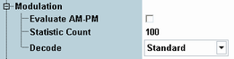

Modulation Settings
The following parameters configure the modulation settings of the GSM multi-evaluation measurement. They are contained in section measurement control.

Modulation settings
Indicates whether the AM PM delay is evaluated and displayed in modulation result tables.
Remote command:Defines the number of measurement intervals per measurement cycle (statistics cycle, single-shot measurement). This value is also relevant for continuous measurements, because the averaging procedures depend on the statistic count.
The measurement interval is completed when the R&S CMW has measured the full slot sequence (no. of slots).
Remote command:Defines whether guard and tail bits are decoded (for GMSK modulation only).
- "Standard": Guard and tail bits are assumed to be in line with GSM. If the mobile station does not send these bits correctly, large phase errors are measured at the beginning and end of the useful information.
- "Guard & Tailbits": Guard and tail bits are also decoded. It avoids excessive phase errors in the case of bursts that do not comply with the standard.